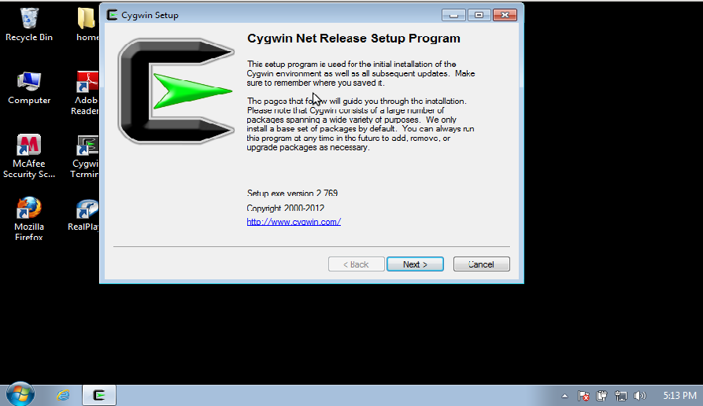
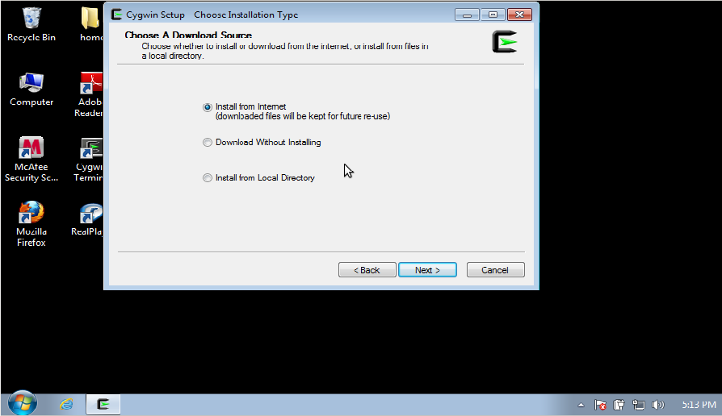
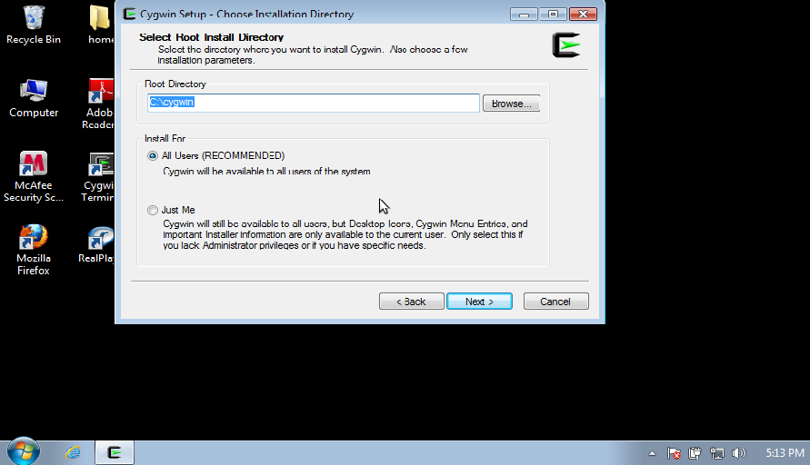
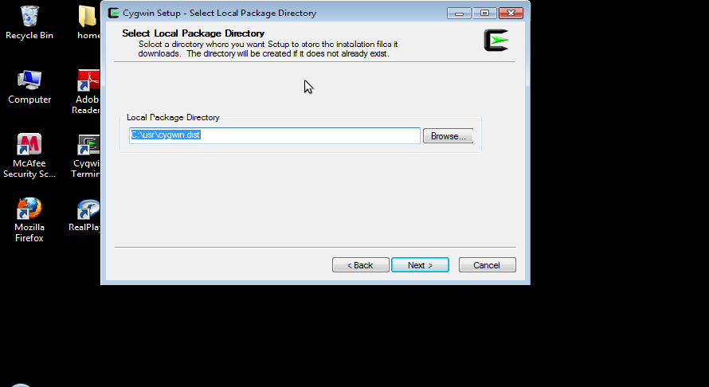
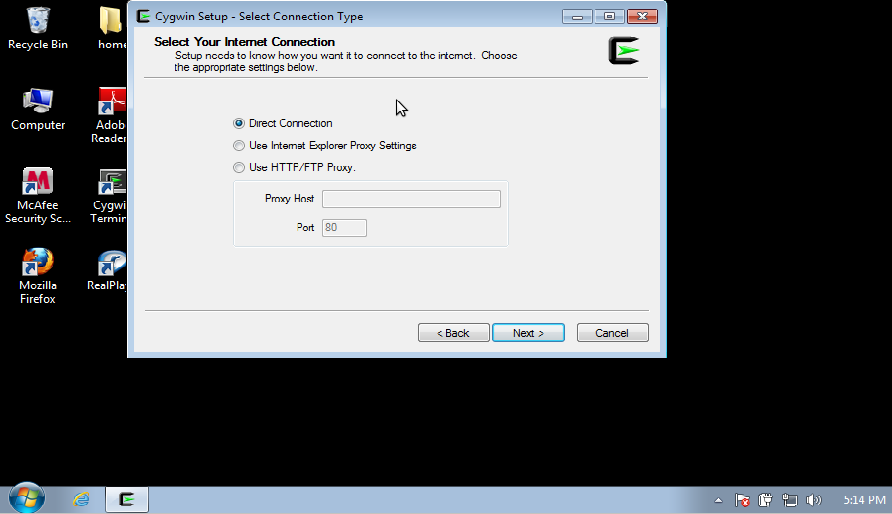
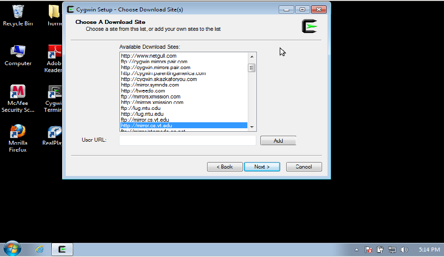
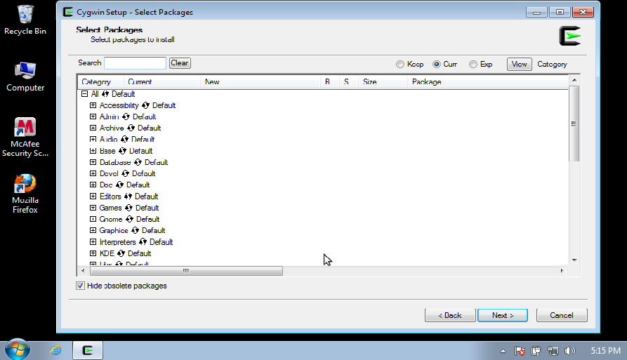
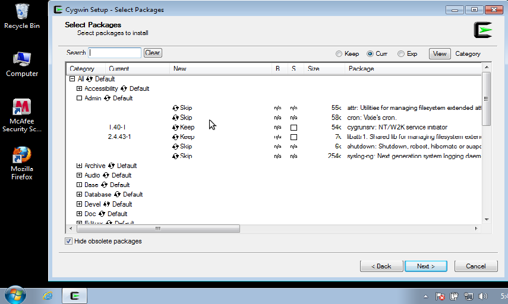
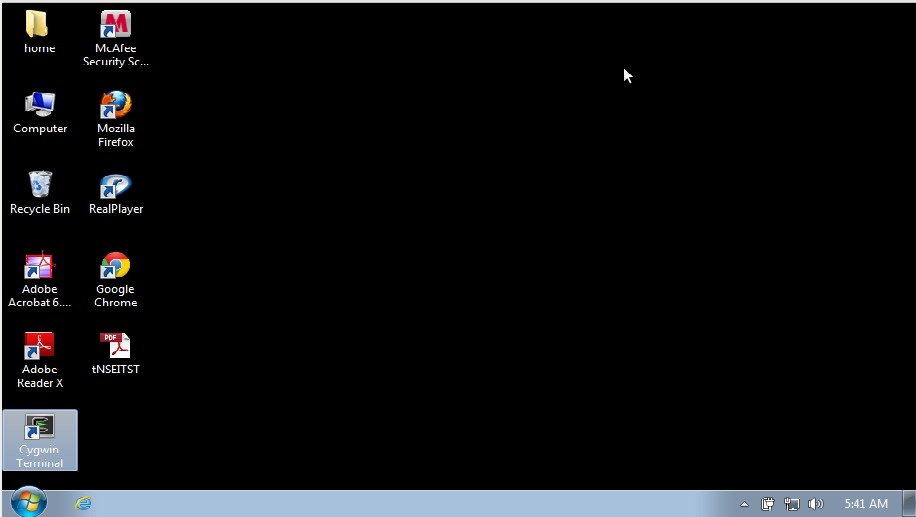

|  Figure 1. Initial screen after starting setup. |
|  Figure 2. There are several choices. Download and install, download, or install from an earlier download. |
|  Figure 3. Here one indicates where the final Cygwin will be installed. Make sure that you have about 10-20 Gb of space available. |
|  Figure 4. This indicates the location of the downloaded distribution. The Setup package will refer to this location when updating. This can also be put on a distribution disk to build Cygwin on other machines. |
|  Figure 5. the default values are good if you do not have to worry about a firewall. |
|  Figure 6.Select one site that is close to your location. |
|  Figure 7. This shows all package categories for software. By clicking on the Default you can Install everything, or uninstall. By clicking on the + the category opens so that you can view the packages in that category. |
|  Figure 8. For each entry Skip means not to install the software package. Other options are to remove, re-install or use another version. |
To compile and use the Computer Programs in Seismology
package, install the following packages:
| Archive | zip | Programs to create ZIP archives |
| |
unzip | Programs to unpack ZIP archives |
| Devel | gcc4 | gcc Versionb 4 compilers |
| |
gcc4-core | |
| |
gcc4-gfortran | Forrtran 95/77 compiler |
| |
gdb | GNU debugger |
| Editors | ed | Line editor which is useful in shells cripts |
| |
gvim | GUI based editor |
| |
vim | VI editor |
| Graphics | GraphicsMagick | Package for converting graphics files.
Used to convert EPS to PNG, e.g., gm convert -trim t.eps t.png |
| |
ImageMagick | Package for converting graphics files.
Used to convert EPS to PNG, e.g., convert -trim t.eps t.png This package has a default behavior of a transparent background. |
| |
epstool | Tool for manipulating EPS files |
| |
ghostscript | Display and convert PostScript files |
| |
ghostscript-fonts-std | |
| |
gv | PostScript or PDF viewer. You can also use display or gm display for single pages |
| Libs | libncurses-devel | Required by gsac and dialog |
| Math | bc | Simple command line calculator |
| Net | openssh | Require to have Secure SHell connections to other computers |
| |
openssl | |
| |
sunrpc | Has XDR development files required by rdseed |
| Text | a2ps | Convert text to PostScript for printing |
| |
enscript | Convert text to PostScript for printing |
| Web | wget | Powerful command-line tool to get files from FTP or WEB sites |
| X11 | Install all - click on the default |
|  Clock on the "Cygwin Terminal" icon |
In the terminal window, unpack
rbhenv.tgz.
Unpack using the command:
gunzip -c rbhenv.tgz | tar xvf -